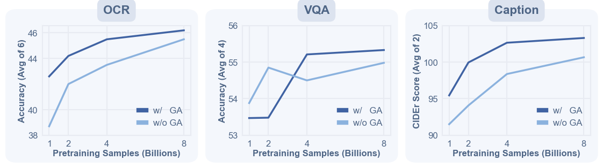
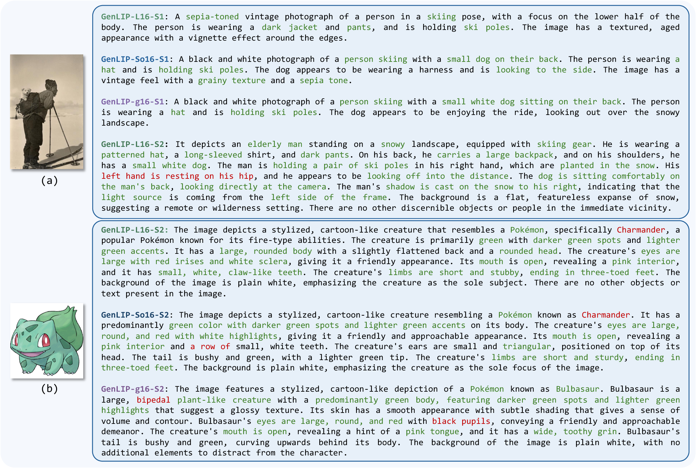
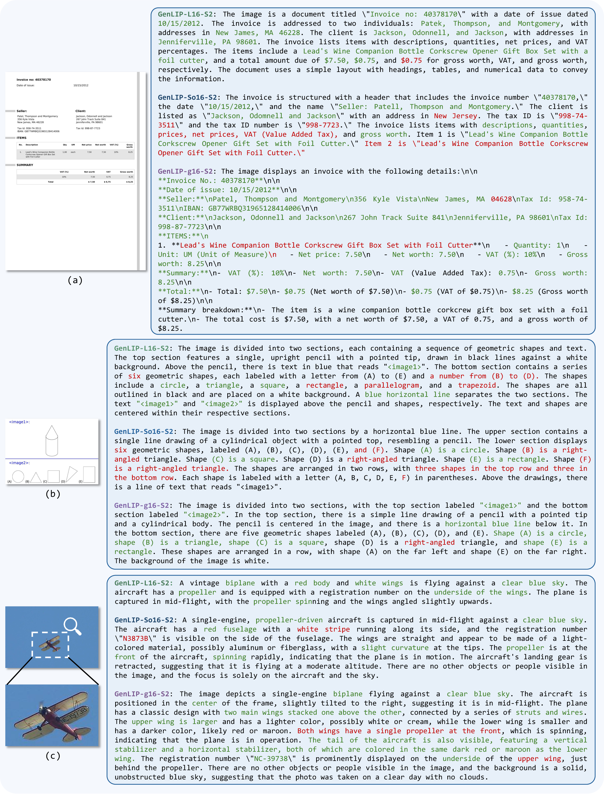

GenLIP: Generative Language-Image Pre-training
Let ViT Speak
A minimalist generative pretraining framework for scalable vision encoders in multimodal large language models.
Beijing Jiaotong University
ByteDance
Nanyang Technological University
*Equal contribution †Corresponding authors
GenLIP training and deployment pipeline
Pretrain by speaking
Deploy as vision encoder
Pretraining on image caption data.
GenLIP Model
single transformer + single autoregressive object
GenLIP as ViT
Projector
MLLM
Serve as competitive vision encoder in MLLMs
GenLIP: builds efficient vision encoder with vision-language alignment by a single transformer and a single autoregressive object.
Single Transformer
Single NTP Loss
No text transformer
8B pretraining samples
Excellent Scalability
Key results
Abstract
In this paper, we present Generative Language-Image Pre-training (GenLIP), a simplified generative pretraining approach for Vision Transformers tailored to multimodal large language models. To better align ViTs with the autoregressive nature of LLMs, GenLIP trains a ViT to predict language tokens directly from visual tokens using a standard language modeling objective, without contrastive batch construction or an additional text decoder.
GenLIP offers three key advantages: simplicity, scalability, and performance. With training totaling 8B samples on Recap-DataComp-1B, GenLIP matches or surpasses strong baselines such as SigLIP2. With continued pretraining on multi-resolution images at native aspect ratios, GenLIP further excels at detail-sensitive tasks such as OCR, chart understanding, and visual question answering.
Simplicity
A single Transformer jointly models visual and linguistic tokens with one language modeling objective.
Scalability
Performance improves with both data and model size, supported by gated attention for stable pretraining.
Performance
GenLIP delivers strong MLLM vision encoder performance, especially on document and OCR-heavy tasks.
Method
Minimal Generative Pretraining For Vision Encoders
GenLIP uses language generation as the pretraining signal, then deploys the trained Transformer as a visual feature extractor for MLLMs.
Unified Transformer
Image patches and text tokens are concatenated into one sequence and modeled by one Transformer.
Prefix-LM Objective
Visual tokens attend bidirectionally, text tokens attend causally, and loss is applied only to text tokens.
Gated Attention
A lightweight gate regulates attention outputs, reducing attention sink and stabilizing visual representation learning.
Results
Strong Vision Encoder Performance With Less Pretraining Data
GenLIP consistently improves frozen visual representation evaluation, with its clearest gains on Doc/OCR tasks.
Qwen2.5-1.5B Frozen Visual Representation
Full table in paper| Model | Arch | Data | Doc/OCR Avg (of 7) | MME-P | Nocaps | ALL AVG |
|---|---|---|---|---|---|---|
| OpenVision2 | L/16 | 12.8B | 44.3 | 1230 | 84.3 | 58.7 |
| SigLIP | L/16 | 40.0B | 42.4 | 1203 | 84.0 | 56.9 |
| SigLIP2 | L/16 | 40.0B | 45.0 | 1165 | 82.9 | 58.7 |
| GenLIP | L/16 | 8.0B | 49.3 | 1258 | 82.6 | 61.5 |
| SigLIP2 | So/16 | 40.0B | 46.8 | 1220 | 84.3 | 60.6 |
| GenLIP | So/16 | 8.0B | 50.1 | 1215 | 87.5 | 62.6 |
| SigLIP2 | g/16 | 40.0B | 47.3 | 1284 | 84.4 | 61.5 |
| GenLIP | g/16 | 8.0B | 53.2 | 1256 | 88.3 | 65.2 |
Qwen2.5-7B Frozen Visual Representation
Full table in paper| Model | Arch | Data | Doc/OCR Avg (of 7) | MME-P | Textcaps | ALL AVG |
|---|---|---|---|---|---|---|
| SigLIP2 | So/16 | 40.0B | 56.7 | 1422 | 139.3 | 69.4 |
| GenLIP | So/16 | 8.0B | 62 | 1424 | 142.1 | 71.8 |
| SigLIP2 | g/16 | 40.0B | 56.6 | 1422 | 142.7 | 68.9 |
| GenLIP | g/16 | 8.0B | 63.5 | 1483 | 144.8 | 73.6 |

Scaling signal. As pretraining grows from 1B to 8B samples, GenLIP keeps improving OCR, VQA, and caption probes, supporting the vision encoder scaling story rather than a one-off benchmark gain.
Resolution signal. Continued pretraining with native aspect ratios strengthens detail-sensitive recognition, which is where an MLLM vision encoder most needs reliable spatial evidence.
Representation Probes
What does "speak" reveal?
Generation and patch semantics readout are used here to inspect the learned visual-language representation, not to redefine GenLIP as a captioning model.

Generation probe. Captioning is used here as an inspection tool for visual-language alignment, while deployment still uses GenLIP as the MLLM vision encoder.
Patch semantics. Local readouts make the learned representation more legible by showing which visual regions align with recognizable language concepts.

Doc/OCR behavior. The qualitative probes connect the benchmark gains to visible text-centric evidence, while keeping failure modes inspectable instead of hiding them behind aggregate scores.
Demo
Explore GenLIP Through Generation Probes
Explore the pretrained encoder's visual-language alignment through generation probes. The deployed model is intended as an MLLM vision encoder.
Natural image
Document/OCR
Global Caption
Local Semantics
View release links
Release
Paper, Code, Models, And Citation
The first release path keeps all resources visible from the first viewport and collected here for repeated access.
GenLIP-L/16
300M parameters - 24 layers - recommended for efficient evaluation.
Model detailsGenLIP-So/16
400M parameters - 27 layers - balanced scale for MLLM experiments.
Model detailsGenLIP-g/16
1.1B parameters - 40 layers - strongest benchmark and Doc/OCR performance.
Model detailsBibTeX
@article{fang2026letvitspeak,
title={Let ViT Speak: Generative Language-Image Pre-training},
author={Fang, Yan and Lan, Mengcheng and Huang, Zilong and Lei, Weixian and Zhao, Yunqing and Zhong, Yujie and Yu, Yingchen and She, Qi and Zhao, Yao and Wei, Yunchao},
year={2026},
url={https://yanfangcs.github.io/vitspeak}
}